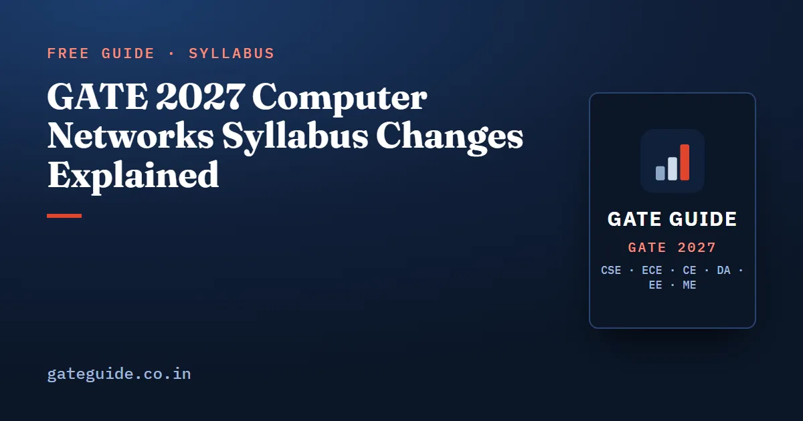

GATE 2027 Computer Networks Syllabus Changes Explained

Computer Networks is the section of the GATE CSE 2027 syllabus that changed the most. ARP, DHCP, ICMP, UDP, SMTP, FTP, email, framing, Ethernet bridging, stand-alone shortest-path and flooding routing, and the OSI and TCP/IP stack list are no longer named, while "performance metrics" and "socket API" are now explicit. What remains is the calculation-heavy core: switching and delays, error detection, MAC, routing, IPv4 fragmentation, CIDR, NAT, TCP, DNS and HTTP.
In this guide
Key takeaways
- The removed items were mostly sources of 1-mark recall questions. The retained items are the sources of calculation questions.
- Analyst compilations put CN at 6–11 marks per paper from 2009 to 2026, about 8 on average (approximate, not official). With the same marks spread over fewer topics, each retained topic becomes a denser target.
- Newly explicit: performance metrics (delays, RTT, throughput, bandwidth-delay product, utilisation) and the socket API (the order and role of socket calls).
- Old PYQs on removed protocols are low priority, not zero. A removed protocol can still appear inside a question on a retained topic.
- Confirm the final wording in the official PDF at gate2027.iitm.ac.in before you re-plan.
The official wording, clause by clause
The table compares the 2026 and 2027 syllabus texts. The 2027 wording is from the official CS syllabus published by IIT Madras on gate2027.iitm.ac.in. GATE Guide is independent of IIT Madras and the GATE office.
| 2026 clause | 2027 clause | Status |
|---|---|---|
| Concept of layering: OSI and TCP/IP Protocol Stacks | Principles of Layering | Narrowed |
| Basics of packet, circuit and virtual circuit-switching | Basics of switching (circuit, packet and virtual circuit) and performance metrics | Retained; performance metrics newly explicit |
| Data link layer: framing, error detection, Medium Access Control, Ethernet bridging | Data link layer: error detection, Medium Access Control, Ethernet | Narrowed |
| Routing protocols: shortest path, flooding, distance vector and link state routing | Distance vector and link state routing | Narrowed |
| Fragmentation and IP addressing, IPv4, CIDR notation | IPv4 - Fragmentation, CIDR Notation | Retained, reworded |
| Basics of IP support protocols (ARP, DHCP, ICMP) | — | Removed |
| Network Address Translation (NAT) | Network Address Translation | Retained |
| Transport layer: flow control and congestion control, UDP, TCP, sockets | TCP - flow control and congestion control, socket API | Narrowed; socket API explicit |
| Application layer protocols: DNS, SMTP, HTTP, FTP, Email | DNS and HTTP | Narrowed |
For how this fits with the Digital Logic and COA changes, see the full GATE CSE 2027 syllabus changes.
Where CN marks are likely to come from
Analyst compilations (approximate, not official) give CN an average of 8.3 marks in 2009–2017 and 8.0 in 2018–2026, never below 6 and never above 11. The trend is flat. The book's topic-by-topic reconstruction estimates that 75–85 percent of CN marks since 2009 fell on topics that remain in the 2027 syllabus; that is an estimate, not a measurement.
The book scores every CN topic on eight factors (a model-based analytical score, not a probability). The top two tiers:
| Tier | Topics |
|---|---|
| Tier 1 (very high priority) | TCP congestion control; CIDR and subnetting; sliding-window ARQ arithmetic; delay arithmetic and performance metrics |
| Tier 2 (high priority) | IPv4 fragmentation; distance vector routing; CSMA/CD computations; TCP connection management; CRC; DNS resolution; switching modes; longest-prefix match; TCP flow control |
A likely shape for 2027 is four to six CN questions: two or three NAT calculations, one or two MSQ statement sets, and at most one short MCQ on a principle such as layering, a DNS record or a socket call. None of this is a guarantee. The Computer Networks important topics article explains each Tier 1 topic.
This article shows the top two tiers. The book ranks all 22 CN topics with their scores and lists the question concepts behind each.
What was removed, in plain terms
- Layering trivia. The seven OSI layer names, which layer a device or protocol sits at, and OSI versus TCP/IP comparisons. Encapsulation, service versus interface versus protocol, and which address (port, IP, MAC) works end to end or per hop all stay.
- Framing. Bit stuffing, byte stuffing and flag bytes.
- Bridging. Bridge learning tables and spanning tree. Hubs versus switches, collision domains and Ethernet frame limits stay under "Ethernet".
- Shortest-path and flooding routing as stand-alone methods. Distance vector and link state stay, and flooding of link-state advertisements is part of link state. Dijkstra itself stays in Algorithms.
- ARP, DHCP and ICMP. Made explicit in 2021, gone after six exam years.
- UDP as a named topic, including its header and pseudo-header checksum.
- SMTP, FTP, POP3/IMAP and email architecture.
Removed topics can still hide inside retained ones. UDP can appear in a "which socket calls does a datagram server need" question or as the transport under DNS. ICMP can surface in a TTL framing of an IPv4 header question. ARP can be a wrong option in an Ethernet MSQ. Keep one page of notes on each; don't practise them as separate topics.
What is newly explicit
Performance metrics
These were always tested, mostly inside sliding-window and store-and-forward questions. Now they are named: bandwidth, transmission delay (), propagation delay (), queuing and processing delay, RTT, throughput, bandwidth-delay product and utilisation.
A quick example. A 1,000-byte packet goes over a 100 Mbps link that is 3,000 km long, with signal speed m/s. The transmission and propagation delays are:
The packet is completely received after ms.
The traps are units: km versus m, Mbps as versus , bits versus bytes, and RTT versus one-way delay.
Socket API
The call sequence is now examinable:
| Role | Call order |
|---|---|
| TCP server | socket → bind → listen → accept → recv/send → close |
| TCP client | socket → (optional bind) → connect → send/recv → close |
| UDP | sendto/recvfrom, with no listen or accept |
Know which call blocks, which call triggers the SYN (connect), which call makes a socket passive (listen) and which returns a new descriptor (accept). Past papers asked only a handful of 1-mark socket items, such as 2008 (which call sends SYN) and 2014 (which call makes a socket passive). That scarcity understates its 2027 relevance now that the phrase is in the syllabus.
Traps that survive the change
- The Go-Back-N sender window is , not . The Selective Repeat window is .
- The fragment offset is in 8-byte units; total length is in bytes.
- SYN and FIN each consume one sequence number. A pure ACK consumes none.
- After a timeout, ssthresh comes from the current cwnd. After a triple duplicate ACK, Reno sets cwnd to the new ssthresh, not to 1 MSS.
- Usable hosts in a block subtract 2; the number of addresses does not.
- Forwarding uses the longest prefix match, not the first match.
- 1 KB as 1000 or 1024 bytes can push a NAT answer outside the accepted range. Recent papers state the convention, so read it.
How to use old CN PYQs now
Keep: sliding window, delay and store-and-forward, CSMA/CD, ALOHA, CRC, subnetting and CIDR, fragmentation, distance vector routing, NAT, TCP, DNS and HTTP counting. Almost every CN calculation question ever set falls in this group.
Treat as low priority: ARP, DHCP, ICMP, the UDP header, SMTP, FTP, email, OSI layer identification, bridging and spanning tree, and framing. Papers from 2021 to 2025 carried ARP, DHCP and ICMP items because those protocols were named then.
Skip entirely: topics removed in 2021, including IPv6, Wi-Fi basics and network security (cryptography, certificates, firewalls). The out-of-syllabus topics article covers older removals across all subjects.
Most CN 2-mark questions since 2014 have been NAT, and since 2021 statement questions often come as MSQ. Neither carries negative marking, but an MSQ gives no partial credit, so the MCQ, MSQ and NAT attempt strategy matters here.
A revised CN study order
- Performance metrics and delay arithmetic. The bandwidth-delay product underlies sliding windows, TCP window scaling and sequence-number sizing.
- Sliding-window ARQ. Stop-and-wait, Go-Back-N and Selective Repeat: window, sequence bits, utilisation, throughput.
- IPv4. CIDR and subnetting, fragmentation, longest-prefix match, NAT.
- TCP. Congestion control, connection management, flow control, then the socket API.
- Data link layer. CRC, CSMA/CD, ALOHA and backoff, Ethernet and switches.
- Routing. Distance vector updates and count-to-infinity, then link state.
- DNS and HTTP. Query counting, RTT and connection counting, statement sets.
Frequently asked questions
Is UDP removed from the GATE 2027 Computer Networks syllabus?
UDP is no longer named. The 2026 transport clause listed UDP, TCP and sockets; the 2027 clause names only TCP flow control, congestion control and the socket API. UDP can still appear indirectly, for example as the contrast case in a socket-call question or as the transport under DNS, so keep the basics but do not drill UDP header questions.
Are ARP, DHCP and ICMP in the GATE CSE 2027 syllabus?
No. The clause on basic IP support protocols (ARP, DHCP, ICMP), which was made explicit in 2021, is absent from the official 2027 syllabus. Old PYQs on ARP requests, DHCP message flow and ICMP message types are now low priority. They may still show up as a wrong option or as context inside an IPv4 or Ethernet question.
What does socket API mean in the GATE 2027 syllabus?
It refers to the sequence and role of socket calls. A TCP server calls socket, bind, listen, accept, then recv or send, and close. A TCP client calls socket, connect, send or recv, and close. Typical questions ask which call sends the SYN, which makes a socket passive and which returns a new descriptor.
Is the OSI model still in the GATE CSE 2027 syllabus?
Only as a principle. The 2026 wording named the OSI and TCP/IP protocol stacks; the 2027 wording says Principles of Layering. Encapsulation, service, interface and protocol, and which addresses are used at which layer remain fair. Memorising the seven OSI layer names or which layer a device sits at is no longer explicitly required.
How many marks does Computer Networks carry in GATE CSE?
Third-party analyst compilations put Computer Networks at 6 to 11 marks in every paper from 2009 to 2026, averaging about 8 marks out of 100. These figures are approximate and not official. In recent papers this has meant roughly four to six questions, most of them calculation-based.
Should I solve old GATE questions on SMTP, FTP and email?
Only if you have spare time. SMTP, FTP, POP3, IMAP and email architecture are no longer named in the 2027 syllabus, and these were mostly 1-mark recall questions. Spend that time on retained calculation topics such as sliding windows, CIDR, fragmentation and TCP congestion control, which appear more often.
Sources
- GATE 2027 official website (IIT Madras)
- GATE 2027 CS syllabus (official PDF)
- GATEQA, GATE CSE 2027 syllabus changes
- GO Classes, GATE 2027 CSE syllabus analysis
- Shiksha, GATE 2027 CSE syllabus changes
- GATE Exam Info, subject-wise weightage 2009–2019
- GeeksforGeeks, subject-wise weightage for GATE CS
Dates, fees and the syllabus are set by the GATE 2027 organising institute and can change. Always confirm at gate2027.iitm.ac.in.